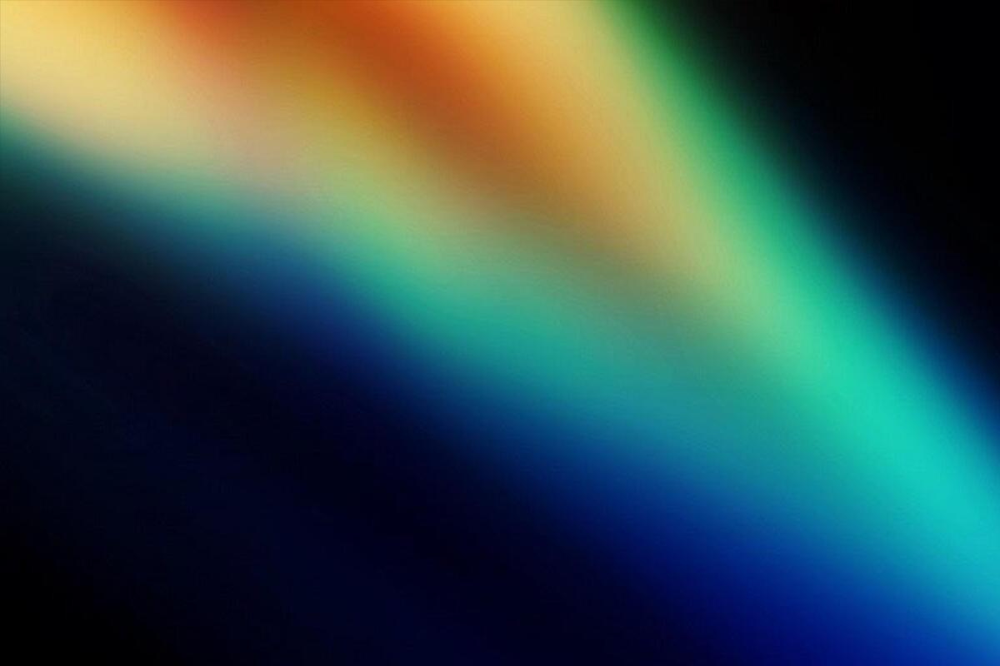

Los signos y los planetas, como siempre les digo, tienen niveles diferentes de vibración. Entonces, decir Acuario -que es un signo- y decir Saturno -que es un planeta- puede significar muchas cosas; o sea, los niveles de manifestación, tanto de los signos como lo que representan los planetas, es muy amplio. ¿Y qué es lo que cambia una cosa a la otra? Es el nivel de conciencia de la persona: cuanto más conciencia tengo de esa persona, pues manifestará a ese signo o planeta con mayor madurez; y cuánto menos conciencia tenga sobre esa energía, más se va a resistir, se va a pelear, y le va a venir de afuera como destino, esa energía que rechaza porque es algo que todavía no está integrando. Por ejemplo, si tengo que integrar a Saturno, que quiere, entre otras cosas, que integre el compromiso y la responsabilidad, y yo me resisto a esto, pues Saturno -la responsabilidad- me va a venir de afuera para que yo haga este trabajo de conciencia.
Jung se basó en que el destino tiene que ver con quién yo soy en la medida de mi inconsciente, o sea que lo que me pasa es lo que soy. Siempre traigo el ejemplo del edificio: si estamos en un edificio y salgo a mirar por el balcón del piso 1 voy a tener un rango de visión, pero si voy al piso 10 tengo otro rango de visión, y si voy al piso 50 tengo otro. Estoy en el mismo edificio, como por ejemplo “estoy en el edificio de acuario", pero no es lo mismo estar en el piso 1 que en el piso 10 o en el piso 50 de Acuario, y esto tiene que ver con los niveles de conciencia. Un signo no es más consciente que el otro. Sí es cierto que en el Mandala zodiacal de Aries a Piscis tiene una evolución espiritual. Aries es una conciencia más básica y Piscis ya está vibrando más alto como la gran comprensión, el gran amor y la iluminación.
Pero hay que entender que depende de nosotros, de lo que tenemos dentro de nuestro corazón, y no depende del signo ni de las posiciones planetarias; porque si una persona tiene base espiritual no se sabe por su signo o por mirar su carta natal, sino por las decisiones que ha tomado en su vida.
Siguiendo con esta línea, les quiero dejar el Mapa de la Conciencia que realizó el doctor David Hawinks, en donde separo la vibración de las emociones en base a tus creencias y desde ahí delimito cómo es tu visión de la vida, cómo es tu visión de Dios, cuál es la emoción predominante, cuál es el proceso en el que estás.
Entonces, si miramos el mapa y tu visión de Dios o lo que llamamos Dios es desdeñosa, la vida es miserable, tu nivel de consciencia es la vergüenza, la emoción que te rige es la humillación y el proceso en el cual estás es la eliminación, porque te sentís eliminado de la vida. La calibración de esa energía es 20 hz, es muy baja, vamos a ir subiendo.
Cuando vibrás en 30 hz tu visión de Dios es vindicativo, la visión de la vida es maligna, la vida es mala, tu nivel de conciencia es la culpa y el proceso es la destrucción; eso te destruye.
Cuando la calibración de energía es 50 hz, la visión de Dios es censurador, tu visión de la vida es desesperanzadora, tu nivel de consciencia es la apatía, la emoción que te rige la desesperación y el proceso en el que vives es la renuncia.
Cuando estás vibrando en 75 hz la visión de Dios es altivo, la visión de la vida es trágica, tu nivel de consciencia es el sufrimiento, la emoción que te rige es el remordimiento y el proceso por el cual vives es el desaliento. Cuando vibras en 100 hz la visión de Dios es castigador, la visión de la vida es atemorizante, tu nivel de conciencia es el temor, la emoción es la ansiedad y el proceso es el retraimiento, te escondés.
Cuando vibrás en 125 hz la visión de Dios es negativa, la visión de la vida es decepcionante, tu nivel de conciencia es el deseo, la emoción es el anhelo -porque tenés deseos, pero la vida es decepcionante porque no se cumplan tus deseos-, entonces Dios es negativo porque no te da lo que querés y el proceso que vivís es la esclavitud, porque vivís esclavo de tus deseos.
Si vibras en 150 hz Dios es vengativo, la vida es antagonista, tu nivel de consciencia es la ira, la emoción es el odio y el proceso es la agresión. Como Dios no cumple tus deseos, la vida es decepcionante, por lo que te enoja: la vida está en tu contra, entonces odiás a todo el mundo y vivís agrediendo o te agreden.
Cuando vibras en 175 hz la visión de Dios es indiferente -no sé si sí o si no, pero por lo menos ya salimos de lo negativo-. Entonces cuando no sé si hay algo más grande que yo, la visión de la vida es exigente, porque no hay amor, no hay algo que me sostiene más allá de mí, el nivel de conciencia es el orgullo (porque yo vengo de mí misma), la emoción es el desprecio y el proceso es el engreimiento. Acá empieza la parte del ego, donde creo que no vengo de ningún lado, sino de mí misma.
Si subimos un poco más a 200 hz, Dios aparece como permisivo, entonces la vida es factible, mi nivel de consciencia es el coraje ("bueno me la juego, me mando"), la emoción es el consentimiento y el proceso es el empoderamiento. Empieza un poquito de Júpiter y Sagitario. Estaba vibrando en Piscis y Escorpio bajo: oscuridad, confusión, depresión. Podríamos decir que en 175 hz es un Leo mal canalizado o Marte y Aries mal llevados, y en el 200 hz empieza un Sol, un Marte un poquito más maleable, más luminoso, que se empieza a empoderar.
En el 250 hz la visión de Dios es consentidora, la visión de la vida es satisfactoria, mi nivel de conciencia es la neutralidad -no hay ni bien ni mal- la emoción es la confianza y el proceso es la liberación. Empieza a aparecer Júpiter, un poco de Urano / Sagitario / Acuario bien llevado.
En 310 hz la visión de Dios es edificante, la visión de la vida es esperanzadora, el nivel de conciencia es la voluntad -me doy cuenta que también depende de mi voluntad hacia dónde voy y qué voy a hacer-, la emoción es el optimismo (Júpiter a pleno), y aparece la importancia de la intención con la que hago las cosas. Vibrando en 350 hz la visión de Dios es misericordiosa -empieza a aparecer Piscis alto-, el nivel de conciencia es la aceptación, la emoción es el perdón, el proceso es la trascendencia, comprendo que para trascender tengo que perdonar tengo que aceptar porque todo está en armonía.
Cuando vibro en 400 hz la visión de Dios es sabio, la visión de la vida es significativa -todo tiene un propósito y un significado-, el nivel de consciencia es la razón, pero no de la mente sino de que todo tiene un para qué, la emoción es la comprensión y el proceso es la abstracción (ya no es todo lo que veo es lineal, sino que hay algo más allá de lo que veo).
Vibrando en 500 hz la visión de Dios es amorosa, la visión de la vida es benigna, el nivel de conciencia es el amor, la emoción es la veneración y el proceso es la revelación. En 540 hz la visión de Dios es Uno (soy uno, todos somos uno), la visión de la vida es completa, el nivel de conciencia es la alegría, la emoción es la serenidad y el proceso es la transfiguración. Empiezo a transformarme, realmente hay una resurrección porque me fundo con el uno.
Cuando vibro 600 hz la visión de Dios es ser universal, la visión de la vida es perfecta, el nivel de conciencia es la paz, la emoción es el éxtasis y el proceso es la iluminación, ya es un ser iluminado. De 700 hz a 1000 hz la visión de Dios es ser interno (Dios está dentro mío), la vida Es, el nivel de conciencia es la iluminación, la emoción es indescriptible (muy piscis) y el proceso es conciencia pura. Entonces este mapa lo podemos usar para decir: “a ver, cuando yo estoy en la culpa, en el sufrimiento, en el temor, en el enojo ¿desde donde estoy vibrando?", y reflexiono: ah mirá... estoy viendo a Dios como indiferente, estoy viendo a Dios como negativo, en realidad tengo ansiedad, estoy destruyéndome”.
Porque dentro de este mapa vamos y venimos en nuestros días todo el tiempo, pero sirve para saber dónde estamos. No se trata de subir la calibración, sino ver cómo vemos la vida y a quién llamamos Dios. Lo que hace elevar la calibración de energía es un momento de alegría o de paz o de aceptación, que estoy vibrando en 350 hz, pero si estoy en la ira o en el orgullo estoy vibrando en 175 hz. Desde el orgullo soy indiferente, aparece el engreimiento, el ego; entonces esto es para conocer nuestro nivel de consciencia. Y esto no depende del signo ni del planeta sino de nuestra base espiritual que traemos de vida anterior, y eso no tiene nada que ver con lo astrológico, sino con lo que hacemos y nos toca vivir, con cómo vemos la vida, cómo aceptamos los procesos, cómo aprovechamos las oportunidades o directamente las arruinamos.